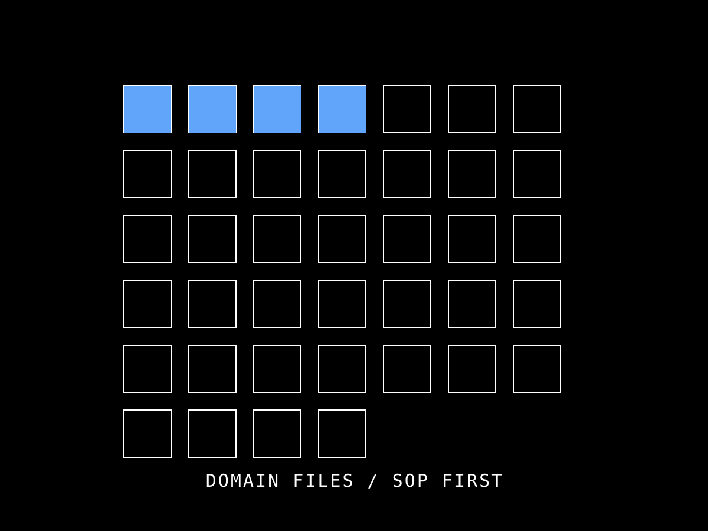

Domain 是知識本身——法規條文、SOP、公式、例外。Skill 是編排（19 個）。Tool 是原子執行（88 個）。知識不應該重複在每個 Skill 裡——這是本專案核心架構原則。本頁列 40 個 domain/*.md，依五大類彩色標示，每張 card 含觸發關鍵字與反查 Skill。

執行 Revit 查詢、建立、修改。所有具體資料必須來自工具回傳。
保存 SOP、公式、例外與判斷流程。方法的單一來源。
把 Domain 與工具串成工作流。不藏方法在 Skill body。
建築技術規則、消防法、無障礙設施規範的本地化 SOP。標 ★ 為含抽屜摘要——點開可看完整公式與例外處理。
非法規驅動的日常 BIM 作業 SOP——查詢、上色、標註、出圖、視圖管理、立面/帷幕牆設計。
不是 BIM 作業本身，而是專案治理層——讓專案在多人多 AI client 協作時不會走樣。
機電與結構的交界面——碰撞、穿梁、機械構件、跨領域出圖。本分支（feature/seven777-beam-penetration）的核心 SOP 群組。
非本專案產出的 SOP，而是引用外部規範本文。放在 domain/references/ 子目錄。
domain/*.md，再決定要不要建 Skill（不是每個 domain 都要 Skill）。最後跑 /claude-md-sync 驗證雙向一致。domain/*.md，含 frontmatter/claude-md-sync 與 /qaqc 驗收